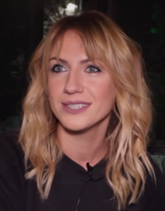

Нікітюк Леся Іванівна
шоувумен, гумористка, ведуча програм — «Орел і решка», «Навколо М» і «Хто зверху?».
шоувумен, гумористка, ведуча програм — «Орел і решка», «Навколо М» і «Хто зверху?».
шоувумен, гумористка, ведуча програм — «Орел і решка», «Навколо М» і «Хто зверху?».
народний артист України